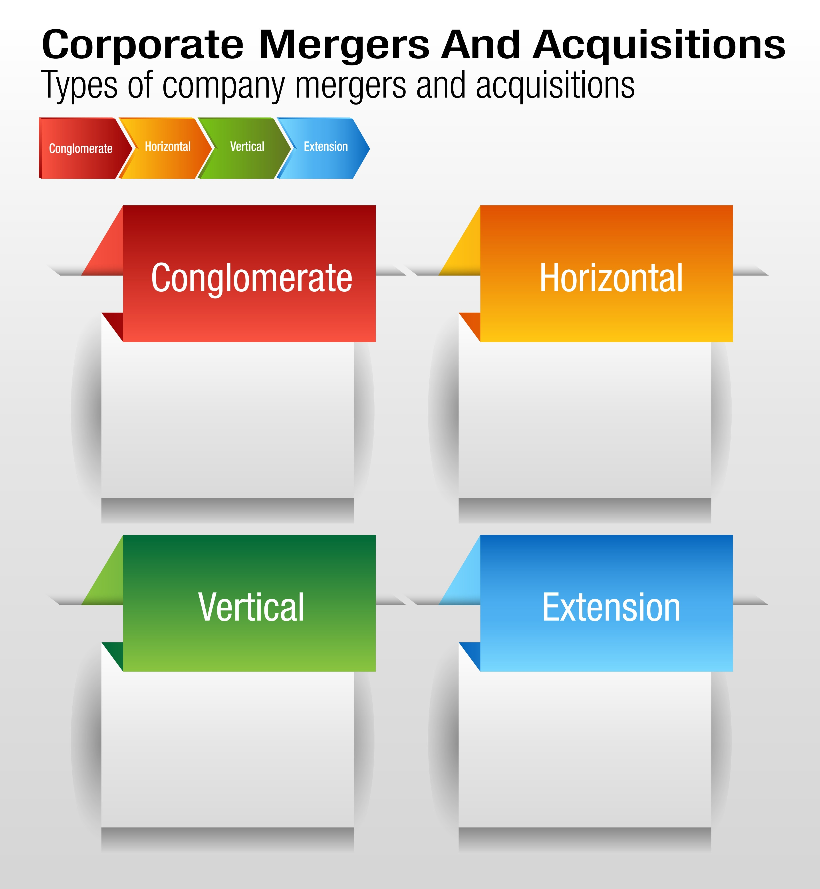

Context
The AI Con discusses how they view it as worrisome that teachers are using AI to develop lesson plans and homework assignments. A documentary I watched on AI integration into education in China instead frames it as something extremely helpful. I want to see for myself what an LLM is capable of in this space.
Experiments
Every experiment will be of developing a lesson plan of the same topic, using the same LLM Gemini 3 Pro. The only thing that will change is the education level I say the lesson plan is intended for -> elementary schooler, high schooler, and PhD (unspecified in what) student.
The topic is: Gilded Age Period in US history, with emphasis on the Presidents at that time.
Overall prompt: > Please develop a lesson plan for me. I am a teacher/professor for a class on US history, and we are starting the Gilded Age unit. I am teaching to a class of education level. What lesson plan should I follow during my first week in this unit? We have class for 1.5 hours on Mondays, Wednesdays, and Fridays. Please include topics I should cover as well as assignments/quizzes/exams. Format this lesson plan in concise bullet points.
3rd grader
AI Response:
Here is a tailored lesson plan for the first day of a Gilded Age unit, adapted specifically for 3rd graders (approx. 8–9 years old).
Teacher’s Note: Since the Gilded Age involves complex economics and political corruption, this plan focuses on tangible concepts appropriate for this age group: Invention, Industrialization (Big Machines), and the contrast between Rich and Poor.
Unit Theme: “Glitter on the Outside, Rusty on the Inside”
Monday: What Does “Gilded” Mean?
Goal: Students will understand that the “Gilded Age” was a time of great wealth for some, but hardship for others.
Time Allocation (1.5 Hours):
15 mins: Hook Activity - The Golden Rock. Show the class a rock painted gold (or a gold-foil wrapped item). Ask if it is real gold. Peel/chip it to reveal the ordinary rock underneath. Explain the term “Gilded.”
30 mins: Lecture/Story: Show pictures of “The Vanderbilts” and their mansions. Contrast with pictures of crowded city tenements.
30 mins: Activity - “Rich & Poor” T-Chart. As a class, sort images or descriptive cards into two columns on the board: “Life in a Mansion” vs. “Life in a Tenement.”
15 mins: Wrap-up/Journal: Students draw one thing a rich person might own and one thing a poor person might struggle with.
Wednesday: The Age of Invention
Goal: Students will identify key inventions of the era (Lightbulb, Telephone, Skyscrapers) and how they changed life.
Time Allocation (1.5 Hours):
15 mins: Review: Quick recall of Monday’s “Gilded” concept.
30 mins: Presentation: Introduce Thomas Edison (Lightbulb), Alexander Graham Bell (Telephone), and the rise of Steel (Skyscrapers). Discuss life before these existed (candles, letters, small wooden buildings).
30 mins: Activity - “Then and Now” Sorting Game. Students work in pairs to match “Gilded Age” items (candle, horse carriage) to their modern equivalents or the new inventions of that time (lightbulb, steam train).
15 mins: Creative Assignment: “My Invention.” Students have free time to draw a blueprint of a machine they would invent to make life easier.
Friday: Factories & The Assembly Line
Goal: Students will experience how goods were made in factories and understand the concept of mass production.
Time Allocation (1.5 Hours):
15 mins: Intro: Discuss how clothes/toys were made by hand previously vs. by machines in the Gilded Age.
45 mins: Simulation - The Assembly Line.
Round 1 (Craftsman): Each student tries to make a complete paper chain (5 links, colored, stapled) alone. Time them.
Round 2 (Factory): Assign specific roles (The Cutter, The Colorer, The Stapler). Time them again to see how much faster it is, but discuss how boring the job feels (repetitive motion).
20 mins: Debrief: Discuss which method was faster vs. which was more fun. Relate this to how factory workers felt.
10 mins: Weekly Quiz: Simple check for understanding.
Assessments & Grading
Formative (Ongoing):
Monday Journal Entry: Check for understanding of the wealth gap visual.
Wednesday Sorting Game: participation grade.
Summative (End of Week):
Friday Short Quiz (5 Questions):
What does the word “Gilded” mean? (A: Shiny outside, plain inside)
Name one invention we discussed.
True or False: Everyone was rich during the Gilded Age.
Circle the picture of the Telephone.
Did assembly lines make building things faster or slower?
Would you like me to generate the printable handouts for the “Then and Now” sorting game or the “Assembly Line” simulation instructions?
High School Junior
AI Response:
Here is a comprehensive lesson plan for the first week of a Gilded Age unit, designed for 11th Grade US History.
Unit Essential Question: Was the Gilded Age a period of golden progress or covered-up corruption?
Monday: The Titans of Industry & The “Gilded” Metaphor
Topic: Introduction to the era, Mark Twain’s definition, and the rise of Big Business.
Time Allocation (90 Minutes):
15 mins: Hook/Lecture: Define “Gilded” (shiny on the outside, rotting underneath). Introduce Mark Twain’s critique.
30 mins: Deep Dive: The rise of Railroads, Steel (Carnegie), and Oil (Rockefeller). Discuss Vertical vs. Horizontal Integration.

Wednesday: Urbanization, Immigration & Social Ideologies
Topic: The shift from rural to urban, “New Immigration,” and the philosophies justifying wealth.
Time Allocation (90 Minutes):
20 mins: Lecture: The “New Immigrant” (Southern/Eastern Europe) vs. Old Immigrant. Push/Pull factors.
25 mins: Primary Source Lab - “How the Other Half Lives”:
Analyze photos by Jacob Riis. Discuss the architecture of the “Dumbbell Tenement.”
25 mins: Concept Comparison:
Social Darwinism: “Survival of the fittest” applied to economics.
The Gospel of Wealth: Carnegie’s argument that the wealthy have a duty to improve society.
20 mins: Political Machines: Brief intro to Boss Tweed and Tammany Hall using Thomas Nast cartoons.
Friday: The Labor Movement & Violent Conflict
Topic: Working conditions, the rise of Unions (AFL vs. Knights of Labor), and major strikes.
Time Allocation (90 Minutes):
20 mins: Simulation: “The Factory.” Turn off lights, play loud industrial noise, and have students perform a repetitive writing task to simulate conditions (monotony, danger).
30 mins: Lecture/Discussion: The formation of Unions. Compare the Knights of Labor (inclusive/radical) vs. American Federation of Labor (exclusive/skilled).
30 mins: Case Studies - The Great Strikes:
Great Railroad Strike of 1877.
Haymarket Affair (Anarchism fears).
Homestead Strike (Pinkertons vs. Steelworkers).
10 mins: Weekly Quiz: Assessing key terms and concepts from the week.
Assignments & Assessments
Formative (In-Class):
Monday: “Robber Baron” Thesis Statement.
Wednesday: Jacob Riis Photo Analysis Worksheet.
Summative (End of Week):
Friday Quiz (Multiple Choice & Short Answer):
Sample Q: Explain the difference between Vertical and Horizontal Integration.
Sample Q: Analyze the provided political cartoon (Thomas Nast) and explain its message regarding political machines.
Weekend Homework - DBQ Prep: Read documents A-D regarding the Pullman Strike (to be discussed next Monday) and outline an argument: Did the government justifiably intervene in the Pullman Strike?
Would you like me to generate a specific rubric for the “Robber Barons vs. Captains of Industry” debate or specific questions for the Jacob Riis photo analysis?
2nd Year PhD Student
Here is a lesson plan tailored for 2nd-year PhD students.
Instructor’s Note: At this level, the focus shifts entirely from content mastery (“what happened”) to historiography, methodology, and theoretical frameworks. The objective is to critique how the “Gilded Age” has been constructed by historians and to situate American industrialization within global capitalism, legal history, and critical race theory.
Unit Theme: “The Search for Order” — Historiography & Political Economy
Monday: Deconstructing the “Gilded” Paradigm
Goal: Critique the periodization of the “Gilded Age” and analyze the evolution of historical interpretation from the Progressives to the “New History of Capitalism.”
Time Allocation (1.5 Hours):
30 mins: Seminar Discussion - The Nomenclature of an Era.
Discussion: Is “Gilded Age” (Twain/Warner) a useful analytical category, or does it obscure the continuities of the “Long Nineteenth Century”?
Contrast with the “Victorian” or “Reconstruction” frameworks.
40 mins: Historiographical Arc Analysis.
The Progressives: Beard & Parrington (Economic determinism/Robber Barons).
The Consensus School: Hofstadter (Status anxiety/Psychological roots).
The Organizational Synthesis: Robert Wiebe & Alfred Chandler (The rise of bureaucracy and the managerial class).
20 mins: Synthesis: How does Richard White’s The Republic for Which It Stands challenge the “Search for Order” thesis?
Wednesday: The Myth of Laissez-Faire — Law & The State
Goal: Challenge the popular narrative of a “weak state” by examining the active role of the judiciary and federal government in constructing corporate power.
Time Allocation (1.5 Hours):
20 mins: Theoretical Framework: Intro to Polanyi’s The Great Transformation. Discuss the concept that “Laissez-faire was planned.”
40 mins: Case Law Deep Dive:
Santa Clara County v. Southern Pacific Railroad (1886): The construction of Corporate Personhood.
Lochner v. New York (1905) and Substantive Due Process.
30 mins: Methodological Workshop: “Reading Against the Grain.”
Analyze a standard corporate annual report from 1890. Discuss how to use business archives to find evidence of state collusion, rather than just profit/loss data.
Friday: Race, Labor, and the Transnational Turn Goal: Re-examine the labor question through the lens of racial capitalism and place the U.S. Gilded Age in a global context (The Great Deflation).
Time Allocation (1.5 Hours):
30 mins: Discussion - The “Wages of Whiteness.”
Analyze W.E.B. Du Bois’s Black Reconstruction (specifically the chapters on the post-1877 labor split).
Discuss the Chinese Exclusion Act (1882) as a labor tool, not just immigration policy.
30 mins: Global Context:
Compare the U.S. “Long Depression” (1873-1896) with simultaneous crises in Great Britain and Germany.
Discussion: How did the “closing of the frontier” link to the rise of American Imperialism?
30 mins: Prospectus Review: Round-table critique of student research ideas. Students briefly pitch how they might use Gilded Age archives for their dissertation topics.
Assignments & Assessments
Weekly Deliverable (Due Friday 9 AM):
Historiographical Précis (1,000 words): Compare and contrast Robert Wiebe’s The Search for Order with a modern monograph (e.g., by Richard White or Sven Beckert). Argue which framework offers a more compelling explanation for the rise of the corporation.
Seminar Preparation:
Students must prepare 3 discussion questions based on the week’s reading (Reading List: The Republic for Which It Stands, Black Reconstruction, and Santa Clara County court opinion).
Semester Project Lead-in:
Archive Identification: Identify one physical or digital archive (e.g., The Library of Congress, HathiTrust, local historical society) containing unexamined Gilded Age legal or corporate records relevant to their dissertation interest.
Would you like me to generate a specific reading list of journal articles for the “Transnational Turn” discussion or a guide on “How to Read Legal Briefs for Historians”?
Takeaways
With the 3rd grader lesson plan, the lesson plan honestly seems pretty strong to me…until it gets to the quiz. I think just circling a picture of a telephone isn’t exactly teaching students about the Gilded Age.
The lesson plan for high school juniors is the only one that includes a graphic of a sample homework or note sheet. Honestly, the amount of assignments is much more in quantity and in level than I experienced from my high school, but who knows, maybe this works for some people.
The PhD lesson plan kind of assumes that the students are studying within this field for their degree, which I find interesting but not super surprising. It’s also interesting how there are almost no quizzes exams in this plan, instead having projects and class discussions as the basis.
Ultimately, I feel like the lesson plans Gemini generated are not bad, but would definitely require additional tailoring and editing from educators. As well, as someone who is not an educator maybe I don’t have the best perspective on what makes a good lesson plan or not. But these generated ones are more detailed than I expected. Still, I wouldn’t be happy if my teacher used one straight from an AI. Every class is different, every school is different, and I don’t think these would always work everywhere.